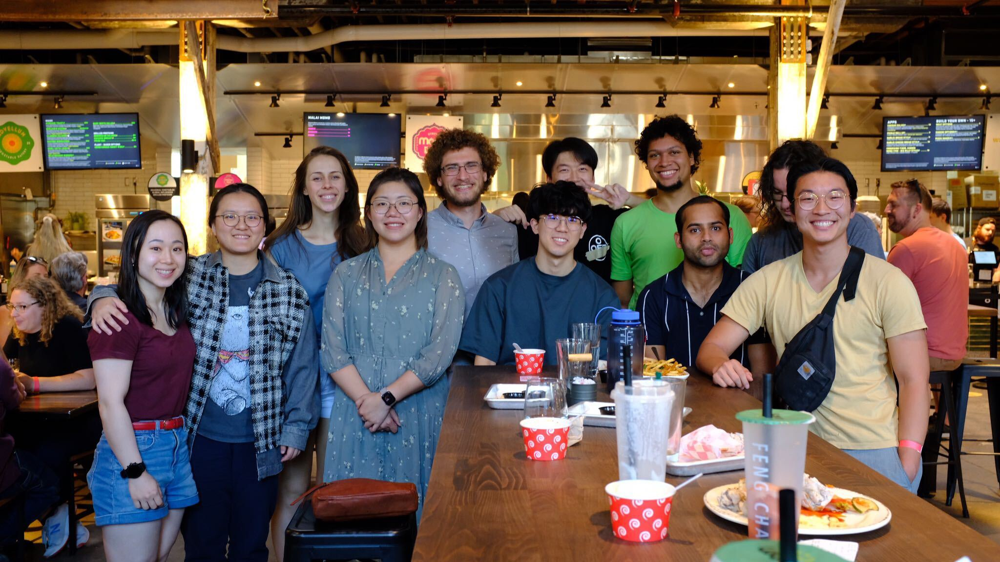

CoEdIT: Text Editing by Task-Specific Instruction Tuning
Welcome to the Minnesota NLP group! Minnesota NLP is a research group led by Dongyeop Kang in Computer Science & Engineering at the University of Minnesota - Twin Cities. Our group aims to develop human-centered language technologies. We are an inter-disciplinary team drawing theories from linguistics, social sciences, and cognitive sciences, developing state-of-the-art machine learning algorithms, and making NLP systems to be more interactive and collaborative.
News



Minnesita NLP Seminar
Minnesota NLP Github Repository
Minnesota NLP Twitter
If you like to join us, please read this page and fill out this form.
People
Current Students
Ph.D. Students
PhD

PhD, w/ Jaideep Srivastava

PhD, w/ Maria Gini
visiting PhD @KAIST
PhD, w/ Maria Gini, CSE fellow
PhD, 3M fellow
PhD

PhD, CSE fellow
Masters and Undergraduate Students
MS

Undergraduate
Undergraduate
Undergraduate
Undergraduate
Publications
2023
-
-
A Survey of Diffusion Models in Natural Language Processing
-
Complex Mathematical Symbol Definition Structures: A Dataset and Model for Coordination Resolution in Definition Extraction
-
"Is the Pope Catholic?" Applying Chain-of-Thought Reasoning to Understanding Conversational Implicatures
-
Annotation Imputation to Individualize Predictions: Initial Studies on Distribution Dynamics and Model Predictions
-
An Analysis of Reader Engagement in Literary Fiction through Eye Tracking and Linguistic Features
-
Rebuilding Social Connection and Enhancing Advertising Effects Through the Nostalgic Appeal during the PandemicAEJMC 2023 / Paper
-
Balancing Effect of Training Dataset Distribution of Multiple Styles for Multi-Style Text Transfer
-
Decoding the End-to-end Writing Trajectory in Scholarly Manuscripts
-
The Semantic Reader Project: Augmenting Scholarly Documents through AI-Powered Interactive Reading Interfaces
2022
-
Improving Iterative Text Revision by Learning Where to Edit from other Revision Tasks
-
User or Labor: An Interaction Framework for Human-Machine Relationships in NLP
-
Read, Revise, Repeat: A System Demonstration for Human-in-the-loop Iterative Text RevisionBest paper award
-
A Comparative Study on Textual Saliency of Styles from Eye Tracking, Annotations, and Language Models
-
Quirk or Palmer: A Comparative Study of Modal Verb Frameworks with Annotated Datasets
-
RedPen: Region- and Reason-Annotated Dataset of Unnatural Speech
2021
-
Does BERT Learn as Humans Perceive? Understanding Linguistic Styles through Lexica
-
Style is NOT a single variable: Case Studies for Cross-Stylistic Language Understanding
-
Augmenting Scientific Papers with Just-in-Time, Position-Sensitive Definitions of Terms and Symbols
-
Modeling Mathematical Notation Semantics in Academic Papers
-
Visualizing Cross-Lingual Discourse Relations in Multilingual TED Corpora
-
Understanding Out-of-distribution: A Perspective of Data Dynamics
2020
-
GenAug: Data Augmentation for Finetuning Text Generators
-
Document-Level Definition Detection in Scholarly Documents: Existing Models, Error Analyses, and Future Directions
-
Plan ahead: Self-Supervised Text Planning for Paragraph Completion TaskEMNLP 2020 (Oral) / Paper
-
INSPIRED: Toward Sociable Recommendation Dialog Systems